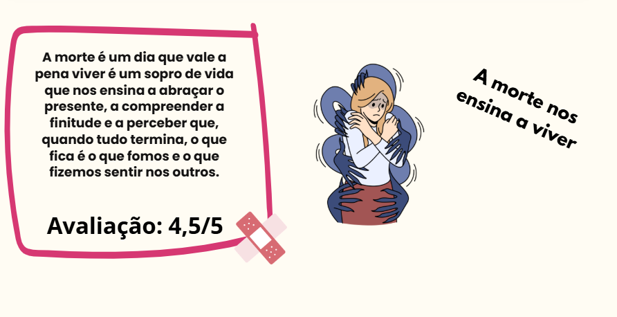
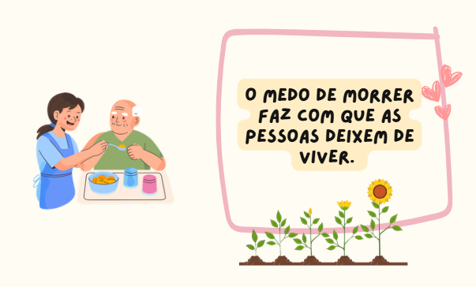
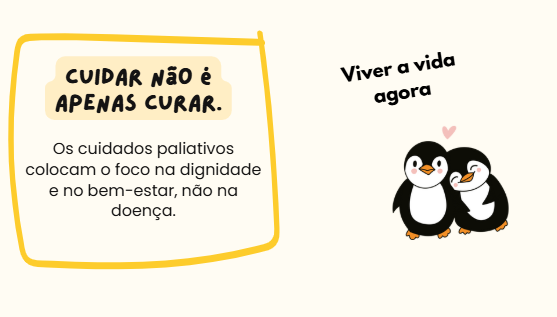

A Morte é um dia que vale a pena viver ...
Porque o dia em que a morte chega
É tambem o dia em que a vida se revela
Por completo.
Todos precisam de cuidado
Empatia, compaixão e limites emocionais são essenciais
Para o equilíbrio de quem cuida.
Podcast
Imagens


